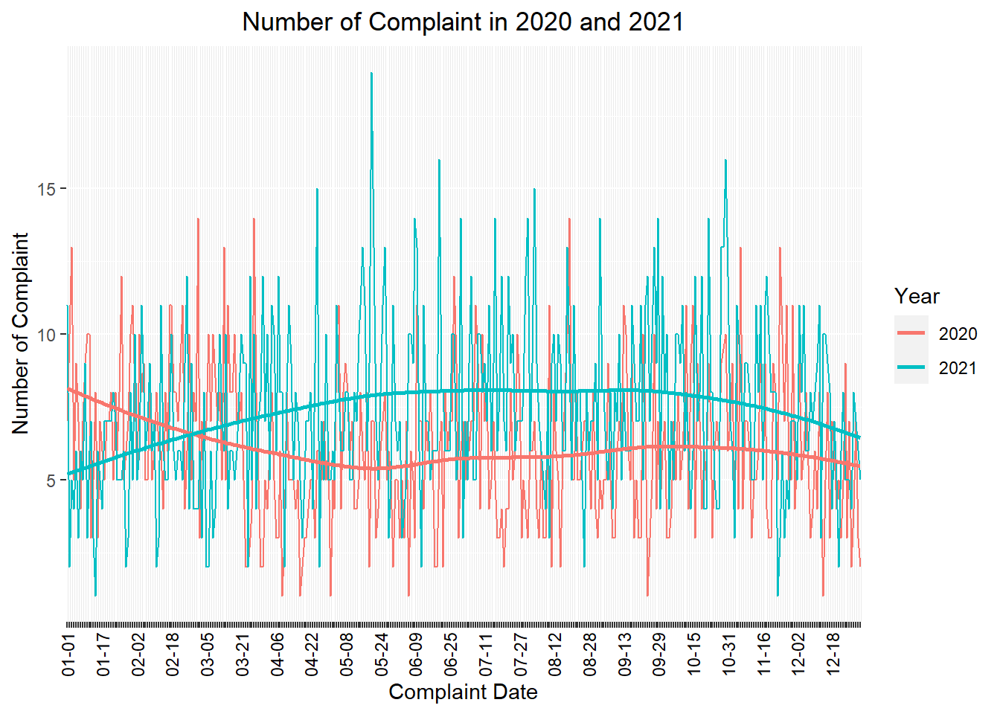
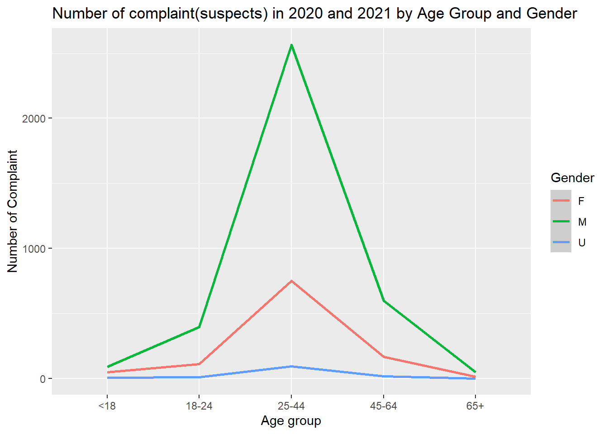
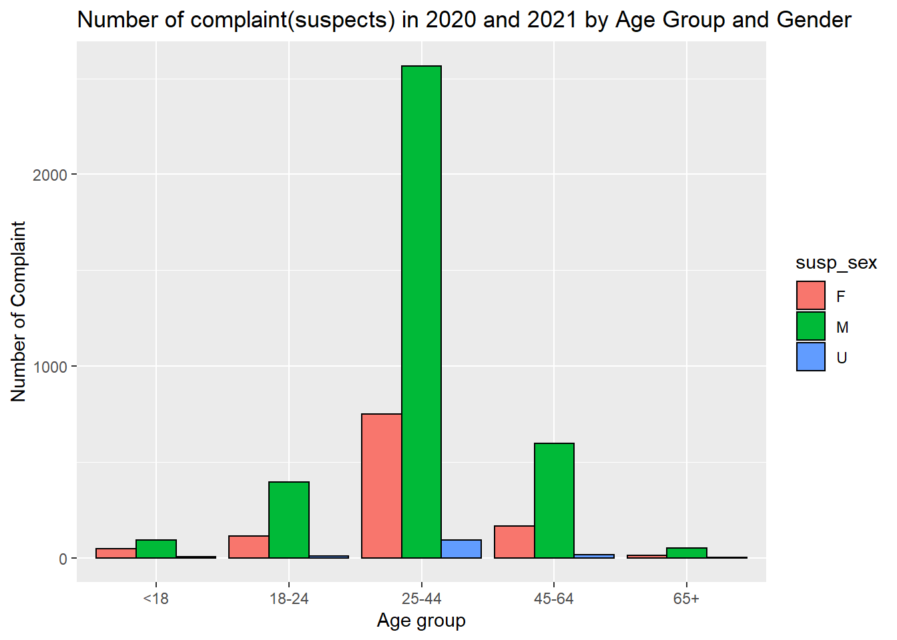
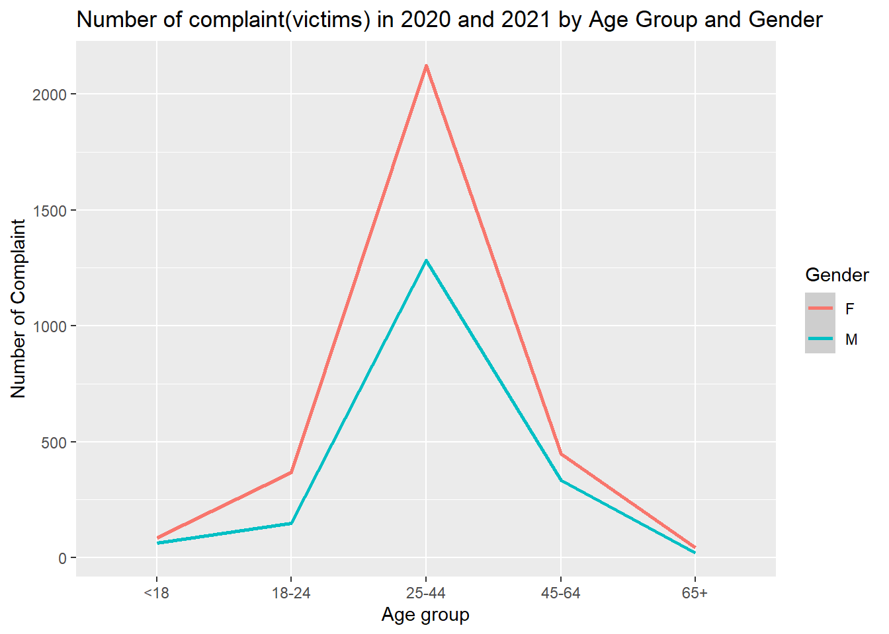

Descriptive Statistics
nypd_complaint_2020_data =
read_csv("./data/nypd_complaint_2020_data.csv")
nypd_complaint_2021_data =
read_csv("./data/nypd_complaint_2021_data.csv")
nypd_complaint_two_year_data =
read_csv("./data/nypd_complaint_two_year_data.csv")complaint_df = nypd_complaint_two_year_data %>%
janitor::clean_names() %>%
filter(
!susp_age_group == c("UNKNNOWN"),
susp_age_group == c("<18", "18-24","25-44","45-64","65+"),
vic_age_group == c("<18", "18-24","25-44","45-64","65+")
) %>%
mutate(
susp_age_group = ifelse(susp_age_group %in% c("<18", "18-24", "25-44", "45-64", "65+"), susp_age_group, "UNKNOWN"),
vic_age_group = ifelse(vic_age_group %in% c("<18", "18-24", "25-44", "45-64", "65+"), vic_age_group, "UNKNOWN"),
vic_race = ifelse(is.na(vic_race), "UNKNOWN", vic_race),
vic_sex = ifelse(vic_sex %in% c("F", "M"), vic_sex, "U"),
susp_sex = ifelse(susp_sex %in% c("F", "M"), susp_sex, "U"),
susp_age_group = factor(susp_age_group),
susp_race = factor(susp_race),
susp_sex = factor(susp_sex),
vic_age_group = factor(vic_age_group),
vic_race = factor(vic_race),
vic_sex = factor(vic_sex),
boro_nm = factor(boro_nm)
)
complaint_1 =
select(complaint_df, c("month", "year", "day", "susp_age_group" , "boro_nm" , "loc_of_occur_desc", "susp_sex", "vic_age_group", "vic_age_group", "vic_sex"))
complaint_1 = complaint_1 %>%
mutate(
month = as.numeric(month),
month = str_pad(month,width = 2,side = 'left',pad = '0'),
day = str_pad(day,width = 2,side = 'left',pad = '0'),
month_day = str_c(month, "-", day),
month_day = factor(month_day)
)
complaint_1 = complaint_1<-cbind(complaint_1[10],complaint_1[,1:9])
complaint_1 = arrange_dt(complaint_1,dt)Compare the Number of Complaint in 2020 and 2021
complaint_1 %>%
group_by(month_day, year) %>%
summarize(obs = n()) %>%
ggplot(aes(x = month_day, y = obs, group = year, color = as.factor(year)))+
geom_line() +
geom_smooth(se = FALSE) +
labs(title = "Number of Complaint in 2020 and 2021", x = "Complaint Date", y = "Number of Complaint", col = "Year") +
theme(axis.text.x = element_text(angle = 90, vjust = 0.5, hjust = 1, color = rep(c("black", rep("transparent", each = 15))))) +
theme(plot.title = element_text(hjust = 0.5))
According to the information in the figure, we can know that the average daily complaint volume in Manhattan in 2021 has exceeded that in 2020 since about February, and continued to the end of 2021. Moreover, the highest monthly complaint volume peaked in 2021, for example, from May to October in 2021. So we can guess that in 2020, people may be unable to go out due to the COVID-19, leading to a decrease in the number of complaints.
Number of complaint(suspects) in 2020 and 2021 by Age Group and Gender:
The New York Police Department has divided the main types of suspects and victims in 2020-2021 into five groups according to age. They are respectively < Age 18, 18 to 24, 25 to 44, 45 to 64, 65 and older. We sorted the data and got the following results：
complaint_1 %>%
group_by(susp_age_group, susp_sex) %>%
summarize(obs = n()) %>%
ggplot(aes(x = as.factor(susp_age_group), y = obs, group = susp_sex, color = as.factor(susp_sex))) +
geom_line() +
geom_smooth() +
labs(title = "Number of complaint(suspects) in 2020 and 2021 by Age Group and Gender", x = "Age group", y = "Number of Complaint", col = "Gender") 
As we can see from the graph, the number of malesuspects who were complained about were much larger than the number of females and unknown gender. A large number of the complained suspects are in the 25-44 age group, so we should be careful of 25-44 year old males in case of danger.
complaint_2 = complaint_1 %>%
drop_na(susp_age_group, susp_sex) %>%
group_by(susp_age_group, susp_sex) %>%
summarize(obs = n())
ggplot(complaint_2, aes(susp_age_group, y = obs,fill = susp_sex)) +
geom_bar(position = "dodge",stat = "identity",colour = "black")+
labs(title = "Number of complaint(suspects) in 2020 and 2021 by Age Group and Gender", x = "Age group", y = "Number of Complaint", col = "Gender") 
Through the bar chart we can clearly see that the number of suspects is more than double the number of men than women in 2020 and 2021.
Number of complaint(victims) in 2020 and 2021 by Age Group and Gender:
complaint_1 %>%
group_by(vic_age_group, vic_sex) %>%
summarize(obs = n()) %>%
ggplot(aes(x = vic_age_group, y = obs, group = vic_sex, color = vic_sex)) +
geom_line() +
geom_smooth() +
labs(title = "Number of complaint(victims) in 2020 and 2021 by Age Group and Gender", x = "Age group", y = "Number of Complaint", col = "Gender")  As can be seen from the graph, the number of Manhattan victims in 2020 and 2021 is much higher for female than male, and the victim group is heavily concentrated in the age group of 25-44. Therefore, women aged 25-44 years old need to pay extra attention to their personal safety in Manhattan.
Prime suspected victim site in 2020 and 2021：
The NYPD categorized the main complaint sites for 2020-2021 by type of location, such as banks, ATMs, apartments, streets, bus stops, cabs, and hospitals. We wanted to understand the locations that would be high frequency and turn into reported crime scenes, so we categorized the data to get the following results.
complaint_df %>%
group_by(prem_typ_desc) %>%
count(prem_typ_desc) %>%
filter(n > 2) %>%
mutate(prem_typ_desc = fct_reorder(prem_typ_desc, n)) %>%
ggplot(aes(x = prem_typ_desc, y = n )) +
geom_point(aes(color=n),alpha=0.5) +
geom_smooth( se = FALSE)+
labs(title = "Prime suspected victim site in 2020 and 2021",x = "Location ", y = "Frequency") +
theme(axis.text.x = element_text(angle = 60, hjust = 1))+
theme(plot.title = element_text(hjust = 0.5))
Analysis of the graphs shows that the frequency of crime locations is home ,and it is the most frequent in 2020 and 2021, followed by street and public housing.